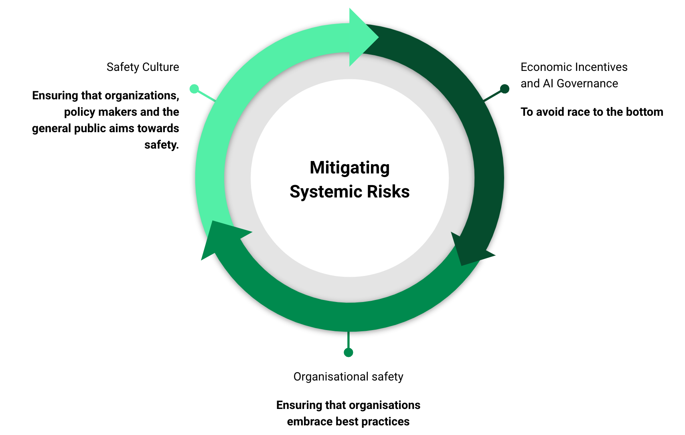
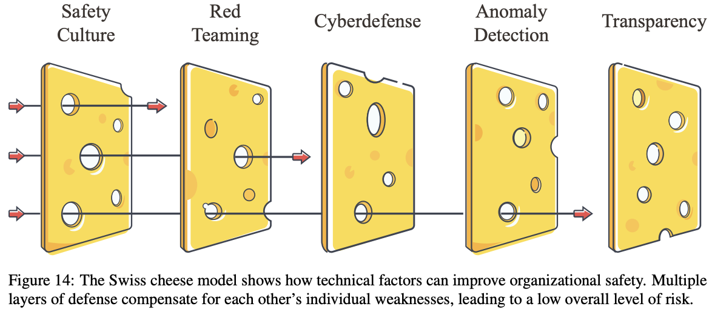
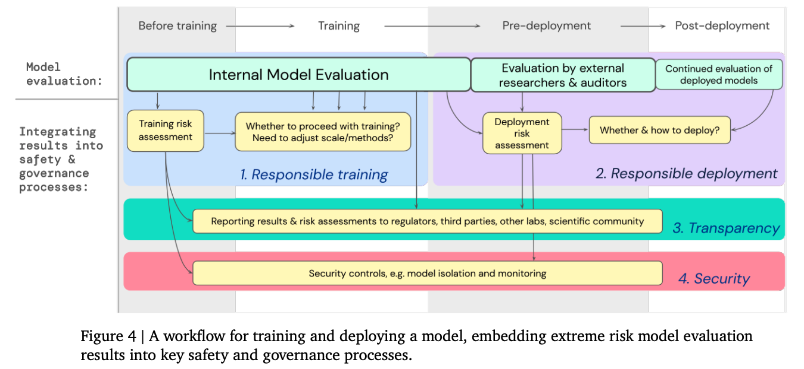

3.6 Systemic¶
Reading Time: 11 minutes
Recap on some systemic risks introduced or exacerbated by AI:
-
Exacerbated biases: AIs might unintentionally propagate or amplify existing biases.
-
Value lock-in: E.g., stable totalitarian dictators using AI to maintain their power.
-
Mental health concerns: For example, large-scale unemployment due to automation could lead to mental health challenges.
-
Societal alignment: AI could intensify climate change issues and accelerate the depletion of essential resources by driving rapid economic growth.
-
Disempowerment: AI systems could make individual choices and agency less relevant as decisions are increasingly made or influenced by automated processes.
There are no clear solutions to those systemic risks, but here are some considerations.
Exacerbated Biases: There is already a large body of literature on reducing bias (source). Unfortunately, many developers and ML researchers dismiss those problems. The first step, which is not simple, is recognizing those problems. Developers must be aware that biases can arise at many stages of the AI development process, from data collection to model training and deployment. Mitigating those biases is not impossible, and best practices exist. The main techniques are data preprocessing and filtering, diversifying the data, and instruction tuning. Those techniques are pretty subtle and are not perfect, but they are solid baselines.
Value Lock-in: One of the most concerning risks posed by AI is the potential for stable totalitarian dictators to use the technology to maintain their power. It's not simple to mitigate this risk. In some ways, we already live in a kind of value lock-in. One solution could be avoiding the concentration of advanced AI capabilities in the hands of a few powerful actors. Instead, we should work towards a future where AI is developed openly and its benefits are widely distributed through the help of an international organization. This could help prevent authoritarian lock-in. Another important aspect is preserving human agency by maintaining the ability for humans to meaningfully steer the future trajectory of AI systems rather than ceding all control to automated optimization processes. But this is easier said than done.
Manage Mental Health Concerns: The rapid development and deployment of AI systems could significantly affect mental health. As AI becomes more capable and ubiquitous, it may displace many jobs, thereby increasing unemployment, financial stress, and feelings of purposelessness. While the link between automation, job loss, and mental health may seem indirect and beyond the scope of AI development, it is still essential to consider the potential impacts since this could affect almost all of us. If a student's main activity, for example an art for which the student has been training during their whole studies, is automated overnight, their mental health may suffer for a while. Unemployment is associated with adverse mental health outcomes long after initial job loss occurs (source). To mitigate these risks, we can prioritize mental health support and resources alongside the development of AI. This could include investing in education and retraining programs to help workers adapt to the changing job market, funding research into AI's mental health impacts, and developing targeted interventions. There is also a large amount of scientific literature on mental health that should be made accessible.
Additionally, the use of AI in social media and other online platforms can exacerbate issues like addiction, anxiety, and depression. A 2021 whistleblower report revealed that the company's own internal research showed that Instagram was detrimental to the mental health of teenage girls, worsening body image issues and suicidal thoughts. Despite this knowledge, they allegedly prioritized profits over making changes to mitigate these harms. A first step to solving those problems could be acknowledging the problem and committing to finding solutions, even if this means less profit.
Societal Alignment: To address the potential misalignment between AI systems and societal values and to avoid excesses of capitalism culminating in the creation of systems that consume all the resources and exacerbates climate change (source), a partial solution could be to internalize negative externalities by, for example, implementing a carbon tax. Again, easier said than done. This is why fostering multidisciplinary collaboration between AI developers, economists, and other domain experts is essential in this process. But ultimately, we should debate the extent of automation that we want in society, and those are political and societal choices, not just AI technical difficulties.
Disempowerment and enfeeblement: As AI systems become more advanced and integrated into our lives, we must ensure that humans remain empowered and maintain agency. While tools like GPT-4 may offer short-term benefits, the next generation of those systems also raises concerns about the potential for long-term human disempowerment. To address this risk, we must actively work towards developing AI systems that augment and support human capabilities rather than replacing them entirely. There needs to be a debate about the limits of what we allow ourselves to do as a society and what we don't allow ourselves to do. It's what we decide to go for and how far we're willing to go with fully automated societies.
In summary, addressing the systemic risks posed by AI is not easy. It requires ongoing, multidisciplinary collaboration and solving complex coordination games. The fact that responsibility for the problem is so diverse makes it difficult to make the solutions actionable. Acknowledging the problems is perhaps the most critical step in many of the above issues.

Figure: An illustration of a framework that we think is robustly good to manage risks.
AI Risks are too numerous and too heterogeneous. To address these risks, we need an adaptive framework that can be robust and evolve as AI advances.
3.6.1 Strategy A: AI Governance¶
The pursuit of AI advancement, much like the nuclear arms race of the Cold War era, represents a trade-off between safety and the competitive edge nations and corporations seek for power and influence. This competitive dynamic increases global risk, underscoring both the need for deliberate governance and the redesign of economic incentives to prioritize long-term safety over short-term gains.
Effective AI governance aims to achieve two main objectives: a) time and resources for solution development to ensure that sufficient time and resources are allocated for identifying and implementing safety measures and b) enhanced coordination to increase the likelihood of widespread adoption of safety measures through global cooperation. AI risks are multifaceted, necessitating regulations that encourage cautious behavior among stakeholders and timely responses to emerging threats.
Designing better incentives
-
Windfall clauses: Implementing agreements to share the profits between the different labs generated from AGI would mitigate the race to AI supremacy by ensuring collective benefit from individual successes.1
-
Rethinking AGI labs governance: It is important to examine the governance structures of AGI labs. For example, being non-profit and having a mission statement that makes it clear that the goal is not to make the most money, but to ensure that the development of AI benefits all of humanity, is an important first step.
-
Centralized development of high-risk AI: For example, Yoshua Bengio et al. propose creating a secure facility akin to CERN for physics, where the development of potentially dangerous AI technologies can be tightly controlled (source). This measure is highly non consensual.
-
Legal liability for AI developers: Establishing clear legal responsibilities for AI developers regarding misuse or failures can foster safer development practices.
Preventing the development of dangerous AI
-
Moratoriums and regulations: Implementing temporary halts on the development of high-risk AI systems and enforcing legal frameworks, like the EU AI Act, to regulate or prohibit certain AI capabilities.
-
Controlling Access and Replication: Limiting the distribution and replication of powerful AI systems to prevent widespread misuse.
Maintaining human control
- Meaningful human oversight: Ensuring AI systems, especially those involved in critical decision-making processes, operate under human supervision to prevent irreversible consequences.
In conclusion, mitigating AI's risks requires a multifaceted approach combining governance, public engagement, economic incentives, legal measures, and promoting a global safety culture. By fostering international cooperation and prioritizing safety and ethical considerations in AI development, humanity can navigate the challenges posed by advanced AI technologies and harness their potential for the greater good.
- For more information, see the chapters on AI Governance.
3.6.2 Strategy B: Organizational safety¶
Accidents Are Hard to Avoid, even when the incentive structure and governance try to ensure that there will be no problems. For example, even today, there are still accidents in the aerospace industry.

Figure: Swiss cheese model. (source)
To solve those problems, we advocate for a Swiss cheese model — no single solution will suffice, but a layered approach can significantly reduce risks. The Swiss cheese model is a concept from risk management, widely used in industries like healthcare and aviation. Each layer represents a safety measure, and while individually they might have weaknesses, collectively they form a strong barrier against threats. Organizations should also follow safe design principles (source), such as defense in depth and redundancy, to ensure backup for every safety measure, among others.
Many solutions can be imagined to reduce those risks, even if none is perfect. The first step could be commissioning external red teams to identify hazards and improve system safety. This is what OpenAI did with METR to evaluate GPT-4. However AGI labs also need an internal audit team for risk management. Just like banks have risk management teams, this team needs to be involved in the decision processes, and key decisions should involve a chief risk officer to ensure executive accountability. One of the missions of the risk management team could be, for example, designing pre-set plans for managing security and safety incidents.
Accidents could also arise during training before the deployment. Sporadically, this can also be an error sign or a bug (source). To avoid accidents during training, the training should also be responsible. Model evaluation for extreme risks, which was written by researchers from OpenAI, Anthropic, and DeepMind, lays out a good baseline strategy for what needs to be done before training, during training, before deployment, and after deployment. (source)

Figure: A workflow for training and deploying a model responsibly. (source)
3.6.3 Strategy C: Safety Culture¶
AI safety is a socio-technical problem that requires a socio-technical solution. As such, the resolution to these challenges cannot be purely technical. Safety culture is crucial for numerous reasons. At the most basic level, it ensures that safety measures are at least taken seriously. This is important because a disregard for safety can lead to the circumvention or rendering useless of regulations, as is often seen when companies that don't care about safety face audits (source).
The challenge of industry-wide adoption of technical solutions. Proposing a technical solution is only the initial step toward addressing safety. A technical solution or set of procedures needs to be internalized by all members of an organization. When safety is viewed as a key objective rather than a constraint, organizations often exhibit leadership commitment to safety, personal accountability for safety, and open communication about potential risks and issues (source).
Reaching the standards of the aerospace industry. In aerospace, stringent regulations govern the development and deployment of technology. For instance, an individual cannot simply build an airplane in their garage and fly passengers without undergoing rigorous audits and obtaining the necessary authorizations. In contrast, the AI industry operates with significantly fewer constraints, adopting an extremely permissive approach to development and deployment, allowing developers to create and deploy almost any model. These models are then integrated into widely used libraries, such as Hugging Face, and those models can then proliferate with minimal auditing. This disparity underscores the need for a more structured and safety-conscious framework in AI. By adopting such a framework, the AI community can work towards ensuring that AI technologies are developed and deployed responsibly, with a focus on safety and alignment with societal values.
Safety culture can transform industries. Norms about trying to be safe can be a powerful way to notice and discourage bad actors. In the absence of a strong safety culture, companies and individuals may be tempted to cut corners, potentially leading to catastrophic outcomes (source). Capabilities often trade off with safety. The adoption of safety culture in the aerospace sector has transformed the industry, making it more attractive and generating more sales. Similarly, an ambitious AI safety culture would require the establishment of a large AI security industry (a neologism inspired by the cybersecurity industry).
If achieved, safety culture would be a systemic factor that prevents AI risks. Rather than focusing solely on the technical implementation of a particular AI system, attention must also be given to social pressures, regulations, and safety culture. This is why engaging the broader ML community that is not yet familiar with AI Safety is critical (source).
How to concretely increase public awareness and safety culture?
-
Open letters: Initiatives like open letters, similar to the one from the Future of Humanity Institute (source), can spark public debate on AI risks.
-
Safety culture promotion: Advocating for a culture of safety among AI developers and researchers to preemptively address potential risks, for example by organizing internal training on safety. For example, internal training for cybersecurity is already common for some companies. Opening AI safety courses in universities and training future ML practitioners is also important.
-
Building consensus: Create a global AI risk assessment body, similar to the IPCC for climate change, to standardize and disseminate AI safety findings.
-
For example, in the pharmaceutical industry for drug development, companies sometimes enter into co-development and profit-sharing agreements to share the risks and rewards of bringing a new drug to market. For example, in 2014, Pfizer and Merck entered into a global alliance to co-develop and co-commercialize an anti-PD-L1 antibody for the treatment of multiple cancer types. ↩